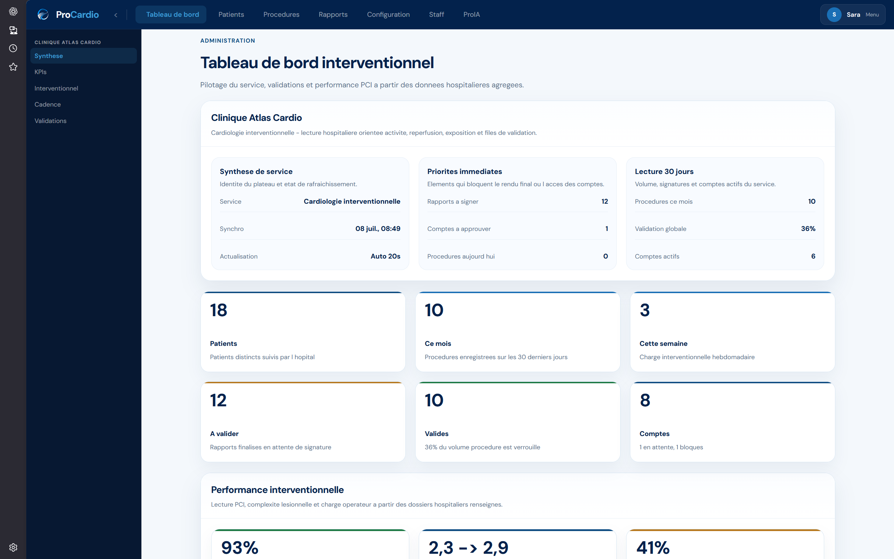
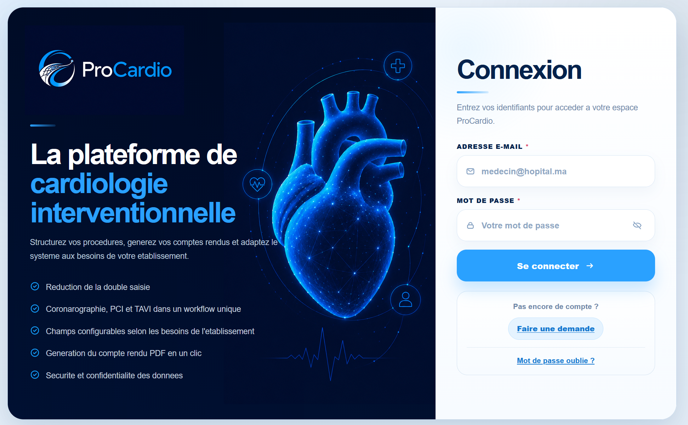
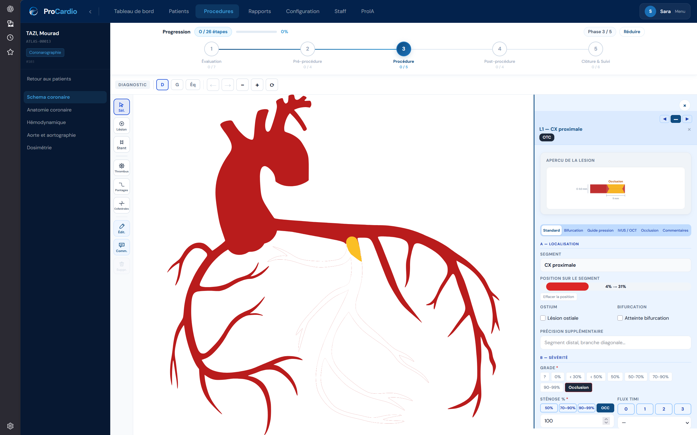
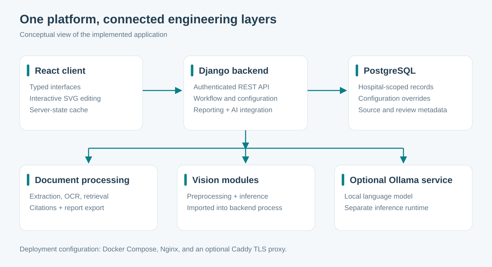

ProCardio / Final-year internship at Ciprotec
From procedure notes to review-ready reports.
Interventional cardiology teams record information throughout a procedure. When those details sit in different tools or formats, teams have to pull them together again for reporting.


What I built
I translated workflow requirements into a hospital-scoped web platform. I prepared imaging data, evaluated and integrated computer vision suggestions, and worked on document retrieval and report generation. Clinicians can accept, edit or reject suggested entries.
Potential impact
Reusing structured entries could reduce repeated documentation and make reports easier to review. Shared defaults and hospital-specific settings let the same application adapt to local workflows.
Product screens & architecture






Multi-tenant software
React, TypeScript, Django REST Framework and PostgreSQL for role-aware workflows and hospital-scoped data.
See the tenancy designData pipelines and computer vision
Imaging ETL, augmentation and segmentation experiments with PyTorch, Ultralytics YOLO and OpenCV.
Read the model evaluationRetrieval and delivery
PDF extraction and OCR feed retrieval with source citations and optional Ollama generation. Docker Compose packages the app. GitHub Actions checks the public showcase.
Trace the document workflow